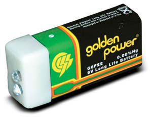

An off-the-grid family in southern Oregon has turned a great idea into a successful business. When Barclay Henry decided to hike the entire Pacific Crest Trail, which spans 2,650 miles from Mexico to Canada, he had to figure out ways to lighten his load. He made his own lightweight backpack, sleeping bag, tent and stove, and his equally creative younger brother, Benjamin, came up with an innovative flashlight design. Weighing less than one and a half ounces, the tiny gadget lit Barclay’s entire trip.
The success of the “Pak-Lite” prototype has created a bootstrap business for the Henry family. Barclay’s father, Vic, handles sales; his wife, Sheila, processes the orders; and all five of their children help make the flashlights.
Benjamin’s design, patented when he was 15 years old, is simple: A tiny plastic cap with two bright LED bulbs snaps onto a 9-volt battery. LED technology uses so little energy that one 9-volt battery can power the flashlight for up to three years. The Pak-Lite also can be attached to alkaline or lithium batteries, and comes in a variety of colors, including glow-in-the-dark.
Pak-Lites are now being used by the American Red Cross, the U.S. military and backpackers around the world. The Pak-Lite Basic ($12.99) has bulbs rated for 10,000 hours. The Pak-Lite Original ($24.99) has dual high/low beams, a steady or flashing beam option and high-intensity bulbs rated for 100,000 hours. The family also sells attachable accessories such as headbands and magnets. For more information, call (541) 660-0349 or go to www.9voltlight.com.
|
 Matthew T. Stallbaumer The Pak-Lite Basic ($12.99) has bulbs rated for 10,000 hours, and weighs less than one and a half ounces. |
|
|